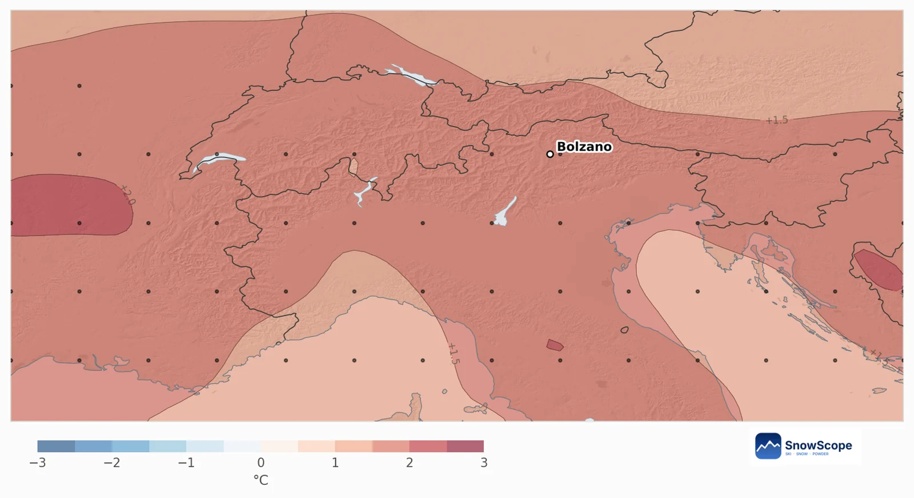
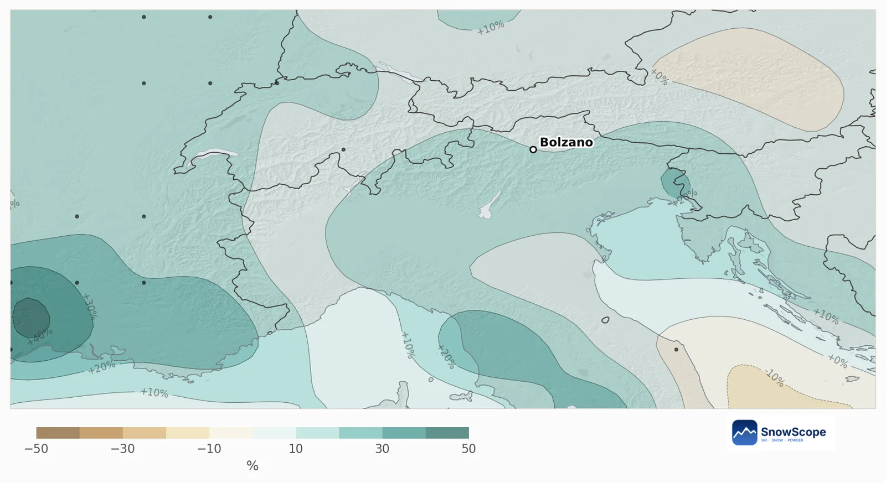

Dolomitas en diciembre de 2026: más cálido, algo más húmedo, Navidad aún blanca en altura
La previsión estacional hace diciembre más cálido y algo más húmedo en los Dolomitas. Nuestro mapa no muestra señal clara en la mayor parte de la cordillera y una inclinación a menos nieve en el 42 %, pero la Navidad sigue siendo muy probablemente blanca a media montaña.
Consulta la previsión de nieve en tiempo real de Dolomites en la app SnowScopeEspesor de nieve, alertas de nieve polvo y mapa 3D, gratis.
Dónde diciembre parece menos nevado
Nuestro mapa compara cada zona de montaña de unos 10 km con sus propios diciembres pasados. En los Dolomitas el 58 % de la montaña no muestra señal clara y el 42 % se inclina a menos nieve, sobre todo al norte hacia el Val Pusteria y al sureste en torno al Cadore. Ninguna zona se inclina a más; las probabilidades de más nieve nueva de lo habitual van del 34 % al 46 %, con un valor central del 41 %.
Qué dice la previsión europea
Las 51 pasadas hacen diciembre 1,7 °C más cálido de lo habitual, con el 80 % de las pasadas más cálido. La precipitación está un 12 % por encima de un diciembre habitual de 70 mm, pero las pasadas están divididas, el 53 % más húmedo.
En los Dolomitas las grandes nevadas llegan con las borrascas del sur. Un mes más cálido sube la cota de nieve, mientras la precipitación de más sigue cayendo como nieve por encima de media montaña aproximadamente.


Las grandes estaciones y la Navidad
En los grandes dominios (Val Gardena, Alta Badia, Cortina, Val di Fassa, Alpe di Siusi) un diciembre habitual trae 24 cm de nieve nueva a media montaña; la tendencia es de 21 cm, con un 41 % de probabilidad de más de lo habitual. El 31 de diciembre lo habitual son 33 cm y la tendencia 30 cm.
En Val Gardena a 1882 m, 42 de los últimos 45 inviernos tenían al menos 5 cm de nieve el 25 de diciembre (93 %). Con la previsión de este año la probabilidad es del 91 %, con 25 cm el día de Navidad en lugar de los 27 cm habituales.
Qué hacer con esto
Los planes de Navidad en los Dolomitas son seguros para las cotas medias y altas; las pistas del valle dependen más de la nieve producida en un diciembre cálido. Los diciembres pasados más parecidos son 2014, 2023 y 2013, y una sola borrasca del sur todavía puede cambiar el mes: sigue la previsión a 7 días.
Consejos para esquiadores
- A principios de diciembre elige dominios con remontes altos.
- Vigila las borrascas del sur en la previsión a 7 días.
- Compara los valles en el mapa de SnowScope: la cota de nieve puede variar mucho.
Referencias y créditos
- ECMWF SEAS5 seasonal forecasts, Copernicus Climate Change Service (C3S) cds.climate.copernicus.eu/datasets/seasonal-postprocessed-single-levels
- ERA5 monthly averaged data, Copernicus Climate Change Service (C3S) cds.climate.copernicus.eu/datasets/reanalysis-era5-single-levels-monthly-means
Sobre estas cifras
Método. Temperatura y precipitación: la previsión estacional del centro meteorológico europeo (ECMWF SEAS5, 51 pasadas iniciadas el 1 de noviembre de 2026, anomalías frente a sus propias repredicciones 1993-2016, rejilla de unos 100 km). Nieve: para cada celda de montaña de unos 10 km tomamos nuestro modelo del pasado (46 inviernos, espesor corregido por altitud) y el tiempo de cada diciembre de 1981 a 2025 (ERA5); los diciembres pasados cuya temperatura y precipitación se parecen a cada pasada cuentan más, y su nieve da las probabilidades. Nieve de hoy: el mapa de nieve de SnowScope (500 m). Una tendencia mensual solo inclina las probabilidades: no prevé una tormenta ni una fecha.
Citar este informe
Para investigación, docencia o prensa: cifras y gráficos reutilizables libremente bajo CC BY 4.0 con esta cita.
SnowScope (2026), Dolomitas en diciembre de 2026: más cálido, algo más húmedo, Navidad aún blanca en altura, https://snowscope.app/blog/es/2026/11/dolomites-december-2026-snow-outlook.html, consultado el 2026-11-10
SnowScope (Atlas Labs). (2026, November 10). Dolomitas en diciembre de 2026: más cálido, algo más húmedo, Navidad aún blanca en altura. SnowScope snow reports. https://snowscope.app/blog/es/2026/11/dolomites-december-2026-snow-outlook.html
BibTeX
@misc{snowscope2026dolomitesdecember2026sno,
author = {{SnowScope (Atlas Labs)}},
title = {Dolomitas en diciembre de 2026: más cálido, algo más húmedo, Navidad aún blanca en altura},
year = {2026},
month = nov,
howpublished = {\url{https://snowscope.app/blog/es/2026/11/dolomites-december-2026-snow-outlook.html}},
note = {Published 2026-11-10 12:17 UTC; accessed 2026-11-10}
}· CC BY 4.0 · Métodos, datos y herramientas →
Sigue Dolomites
Gratis: un aviso cuando llega la nieve y la previsión cada mañana.
Más partes de nieve

Cortina d'Ampezzo de tres maneras: Tofana, Faloria-Cristallo y Cinque Torri-Lagazuoi, con 46 inviernos de datos de nieve a tres alturas.

Retrato de Bonneval-sur-Arc en la Alta Maurienne: tejados de piedra, un puerto cerrado, un pequeño dominio y una nieve sorprendentemente gruesa, según 46 inviernos pasados.

St. Anton y Ski Arlberg a lo largo del invierno: el espesor de nieve habitual cada mes a tres alturas, a partir de 46 inviernos pasados.